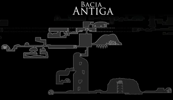

Regioes


Dirtmouth
Um pequeno vilarejo situado sobre a maior parte de Hallownest, encontrado no começo do jogo. É onde o jogador pode, pela primeira vez, entrar em Hallownest propriamente.
Inicialmente, todos as casas estão fechadas, e o único NPC que vive lá é o Inseto Ancião. Porém, conforme o jogador encontra mais NPCs durante o jogo, vários voltam para a cidade e abrem vários edifícios, incluindo uma Estação de Besouro, dois Comerciantes, e a caverna em que a Confessora Jiji mora.
A cidade se conecta à Encruzilhada Esquecida e à Passagem do Rei, a área onde o jogador começa sua jornada, assim como ao Pico de Cristal através de um elevador desbloqueável.
Penhascos Uivantes
Uma terra desolada na parte noroeste de Hallownest. Esparsamente povoada por inimigos, o chão é cheio de cadáveres de insetos grandes e pequenos. Na parte ocidental, um poderoso vento irá empurrar o jogador para trás, impedindo que ele vá além.
Encruzilhada Esquecida

Mercadorias e viajantes costumavam passar por essas estradas antigas. Elas caíram a ruína há muito tempo e se tornaram infestadas com insetos agresivos e carcaças de antigos moradores.
É a primeira área completa que o jogador explora, e onde ele encontrará a maioria dos NPCs que retornarão a Dirtmouth.
Caminho Verde

Túneis verdejantes protegidos por uma espécie de insetos frondosos. Piscinas de ácido ardente e o crescimento excessivo de plantas tornam a movimentação difícil.
Para entrar, o Baldur Ancião precisa ser derrotado após adquirir o Espírito Vingativo do Xamã Caracol no Monte Ancestral. O jogador então segue Hornet através da área até seu primeiro confronto.
Ermos Fúngicos

Cavernas nocivas cheias de esporos. Diferente dos insetos do resto de Hallownest, os habitantes dos Ermos são parecidos com cogumelos fisicamente. Os Ermos contém a Vila dos Louva-a-Deus ao sul, e a entrada principal da Cidade das Lágrimas ao leste.
Cidade das Lágrimas
A enorme capital de Hallownest e o coração de um outrora grande Reino, agora cheio de carcaças de insetos nobres tolos e guardas ainda dedicados a seus deveres.
Água do enorme Lago Azul acima continuamente escorre, banhando a Cidade das Lágrimas em uma chuva permanente.
A Cidade é inicialmente apenas acessível pelos Ermos Fúngicos, abrindo o portão principal com o Brasão da Cidade, no entanto, existem várias outras maneiras de entrar mais tarde com novas habilidades.
Hidrovia Real
Uma série de tubos de esgoto e estruturas de suporte embaixo da Cidade das Lágrimas. Na ponta leste há um poço de elevador para a Cidade que está destruído devido ao abandono. Próximo do canto nordeste há um poço que conecta ao quarto de Emilitia Eterna na Cidade das Lágrimas.
Borda do Reino
A parte ao extremo leste de Hallownest, constantemente nevando com cinzas brancas do gigante e falecido Wyrm. Corpos do Coliseu dos Tolos caem para os poços de ácido abaixo. Na parte sudeste da área existe um poço profundo que leva ao maior depósito de Geo do jogo.
A Colmeia
Separada das terras do Rei, uma espécie de guerreiros aéreos foram governados por uma rainha que cresceu tanto que ela não podia mais sair de seu domínio.
Uma grande comunidade de Abelhas, escondida ao sul da Borda do Rei. Embora a Colmeia exista dentro de Hallownest, as Abelhas se mantém separadas dos assuntos do reino.
Bacia Antiga
A parte mais profunda de Hallownest, quase desprovida de vida, hospedando apenas necrófagos e formas de vida estranhas. Essa era a localização original do Palácio Branco, lar do Rei Pálido, junto com seus consortes e guardas.
As ruínas do Palácio Branco podem ser encontradas na parte leste da Bacia.
Palácio Branco
O Palácio Branco é acessível através da obtenção do Ferrão dos Sonhos Despertado, e usá-lo no corpo de uma Armadura Real nos Campos do Palácio na Bacia Antiga. Uma vez o lar do Rei Pálido, em um ponto desconhecido o Palácio, de acordo com o Colecionador de Relíquias, desapareceu.
O Palácio Branco é um desafio de plataforma, porém, completar essa área só é necessária para completar 100% do jogo e desbloquear o verdadeiro chefe final do jogo.
Ninho Profundo
Escondido no canto sudoeste de Hallownest, cheio de aranhas de todos os tipos e tamanhos. Ao oeste está o Covil da Besta, uma estrutura enorme cheia de teias contendo a Sonhadora Herrah.
Cânion da Névoa
Uma pequena área cheia de névoa, bolhas, e ácido. Em seu centro está os Arquivos da Professora, lar da Sonhadora Monomon e seus experimentos.
Jardins da Rainha
Uma exuberante área parecida com uma estufa, cheia de portões ornamentados, espinhos, e plataformas perigosas, localizada na parte oeste de Hallownest. Os Jardins que uma vez foram da Dama Branca, agora tomados de Louva-a-Deus Traidores que foram banidos de sua tribo e procuram sua própria glória.